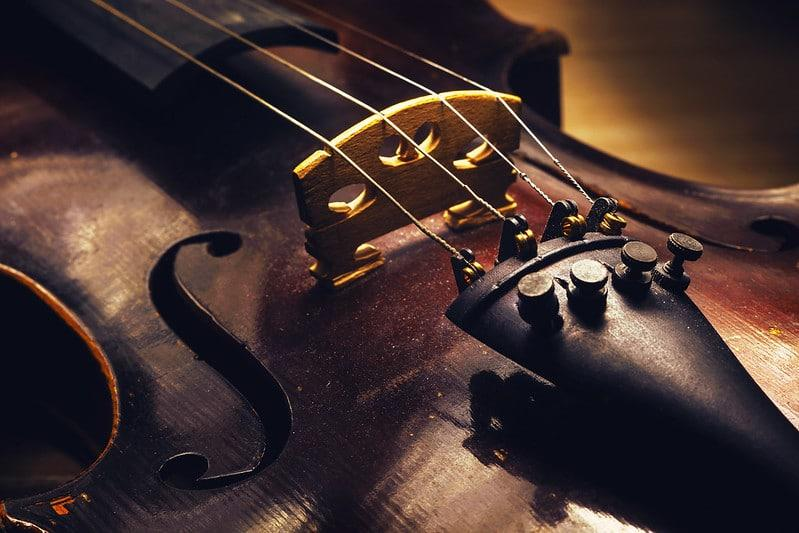

A comunidade internacional frequentemente questiona compositores e intérpretes brasileiros a respeito de identidade, qualidade e quantidade da produção nacional de música para violino. Para uma correta avaliação da contribuição brasileira no cenário internacional, é mister contextualizar a importância histórica dos protagonistas brasileiros. Esta fundamentação histórica agrega relevância no diálogo internacional, apontando novas direções de pesquisa para compositores, intérpretes e musicólogos. Por conseguinte, esta introdução reconstrói a memória do Brasil a respeito do desenvolvimento organológico do arco e da inserção de intérpretes no cenário internacional.
O violino é o que possui o som mais agudo e é também o mais leve dos três; – Ao contrário da viola clássica e do violino, a viola caipira requer o uso de palhetas e/ou dedeiras para ser tocada, enquanto os outros dois necessitam da fricção das cordas para que o som seja ouvido.